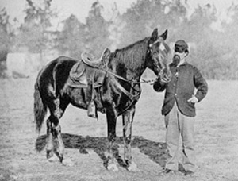
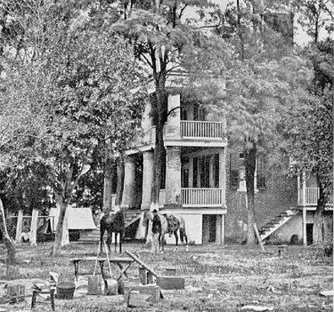

 Peter Boyer served as a private in Company C, 117th Pennsylvania Volunteers, 17th Pennsylvania Cavalry. He was musterered in to service on October 19, 1862 at Lancaster, PA. Several other companies throughout the regiment came from Franklin County. He served throughout the war, eventually being discharged on August 7, 1865, in Louisville, KY.
Peter's regiment consisted of mainly farmers, lumberjacks, and mechanics, yet was one of the most famed of all Pennsylvania units. The 117th first saw action at the battle of Occoquan Creek, where they repulsed superior and larger Confederate forces under the command of Jeb Stuart and Stonewall Jackson.
In February of 1863, Boyer's company was assigned to escort General George Meade's Fifth Corp of the Army of the Potomac. Frustrated by the mundane duties of transmitting orders and acting as escort, Boyer relayed much of his frustration through letters to his father.
Soon, however, Boyer and the 117th were placed under the command of General John Buford. Boyer's company, escorted by shouts and cheers from the townspeople along the way, headed north through Maryland and into Pennsylvania. On July 1st, the 117th crossed through the town of Gettysburg and into action with a large number of Confederate troops under Jubal Early. Badly outnumbered, Boyer and his fellow troops held the high ground for four hours, allowing General Reynolds time to move up with a large contingent of Union infantry. This high ground, gained on the first days' battle at Gettysburg, proved essential to the Union victory.
Throughout the remaining year of the war, Boyer saw action at Cold Harbor and Petersburg. The 117th finished the war at Appomattox, where surrender came on April 9, 1865.
The Peter Boyer Collection:
1862
Peter
Boyer to his Father, November 20, 1862
Peter
Boyer to his Father,
December 29, 1862

1863
Peter
Boyer to his Brother Cyrus, January 18, 1863
Peter
Boyer to his Father, May,
1863
Peter
Boyer to his Father, June 24, 1863
Peter
Boyer to his Brother Daniel, June 25, 1863
1864
Peter
Boyer to his Father,
1864
Peter
Boyer to his Father, May 15, 1864
1865
Peter
Boyer to his Father, March 30, 1865
Peter
Boyer to his Father, April 7, 1865
Peter
Boyer to his Father, May 13,
1865
Letter to
Peter Boyer from his Father, July 26, 1865